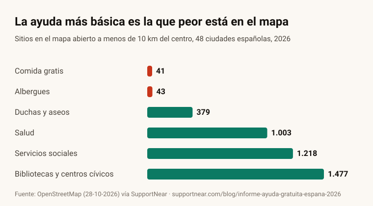

SupportNear › Guías › Mapa de la ayuda gratuita en España 2026
Mapa de la ayuda gratuita en España 2026
Contenido: En cifras · Comida gratis: las ciudades con más sitios en el mapa · Albergues · Duchas y aseos públicos · Horarios: casi nadie los publica · Ciudades sin nada en el mapa para alguna necesidad básica · España frente a otros países · Duchas y aseos en ciudades europeas · Úsalo
En las 48 ciudades españolas de SupportNear, el mapa abierto conoce 41 sitios de comida gratis y 43 albergues, frente a más de 1.000 centros de salud y 1.200 servicios sociales. La ayuda más básica es la que peor está en el mapa: casi nadie la ha puesto.
En cifras
Sitios a menos de 10 km del centro de cada ciudad, sumando las 48 ciudades. Fuente: OpenStreetMap, datos del 28 de octubre de 2026.
- 41comida
- 43albergues
- 379duchas y aseos
- 1.003salud
- 1.218servicios sociales
- 1.477sitios donde estar
Comida gratis: las ciudades con más sitios en el mapa
Albergues
Duchas y aseos públicos
Horarios: casi nadie los publica
De los sitios de comida, albergues y duchas que listamos en las páginas de cada ciudad, estos son los que tienen horario en el mapa y los que abren en fin de semana según ese horario.
| Necesidad | Sitios listados | Con horario | Abren en fin de semana (según su horario) |
|---|---|---|---|
| comida | 38 | 3 (8 %) | 2 |
| albergues | 42 | 1 (2 %) | 1 |
| duchas y aseos | 55 | 14 (25 %) | 13 |
Sin horario, quien busca comida un domingo no sabe si encontrará la puerta abierta. Es lo primero que cualquier entidad puede arreglar: así se hace.
Ciudades sin nada en el mapa para alguna necesidad básica
| Ciudad | Sin nada en el mapa para |
|---|---|
| A Coruña | comida, albergues |
| Albacete | comida, albergues, duchas y aseos |
| Alicante | comida, albergues, duchas y aseos |
| Almería | comida, albergues, duchas y aseos |
| Badajoz | comida, albergues, duchas y aseos |
| Badalona | albergues |
| Bilbao | comida, albergues, duchas y aseos |
| Burgos | comida |
| Cartagena | comida, albergues, duchas y aseos |
| Castellón de la Plana | comida, albergues, duchas y aseos |
| Ceuta | comida, albergues, duchas y aseos |
| Cáceres | comida, albergues, duchas y aseos |
| Córdoba | comida, albergues, duchas y aseos |
| Donostia-San Sebastián | comida, albergues, duchas y aseos |
| Elche | comida, albergues, duchas y aseos |
| Gijón | comida, albergues |
| Granada | albergues, duchas y aseos |
| Guadalajara | comida, albergues, duchas y aseos |
| Huelva | comida, albergues, duchas y aseos |
| Jerez de la Frontera | comida, albergues, duchas y aseos |
| Las Palmas de Gran Canaria | comida, albergues, duchas y aseos |
| León | comida, albergues, duchas y aseos |
| Lleida | comida, albergues, duchas y aseos |
| Logroño | comida, albergues, duchas y aseos |
| Melilla | comida, albergues, duchas y aseos |
| Murcia | comida, albergues, duchas y aseos |
| Málaga | comida |
| Móstoles | comida, duchas y aseos |
| Ourense | comida, albergues, duchas y aseos |
| Oviedo | comida, albergues, duchas y aseos |
| Palma de Mallorca | comida, duchas y aseos |
| Pamplona | comida, albergues |
| Sabadell | comida, duchas y aseos |
| Salamanca | albergues, duchas y aseos |
| Santa Cruz de Tenerife | comida, albergues, duchas y aseos |
| Santander | comida, albergues, duchas y aseos |
| Santiago de Compostela | comida, albergues, duchas y aseos |
| Sevilla | albergues, duchas y aseos |
| Tarragona | comida, albergues, duchas y aseos |
| Terrassa | comida, albergues, duchas y aseos |
| Toledo | comida, albergues, duchas y aseos |
| Valencia | comida, albergues, duchas y aseos |
| Valladolid | albergues, duchas y aseos |
| Vigo | comida, duchas y aseos |
| Vitoria-Gasteiz | comida, albergues, duchas y aseos |
| Zaragoza | comida, albergues, duchas y aseos |
Que salga vacío no significa que no haya: significa que nadie lo ha puesto en el mapa abierto. La lista mundial está en huecos del mapa.
España frente a otros países
Sitios en el mapa por país (todas las categorías, a menos de 10 km de las ciudades de SupportNear).
Duchas y aseos en ciudades europeas
Úsalo
Puedes citar estas cifras con un enlace a esta página. La infografía se puede insertar en cualquier web:

<a href="https://supportnear.com/blog/informe-ayuda-gratuita-espana-2026"><img src="https://supportnear.com/blog/informe-espana-2026.svg" width="760" height="420" alt="Ayuda gratuita en el mapa en 48 ciudades españolas, 2026 (SupportNear)"></a>Los datos completos están en datos abiertos y la forma de contar, en metodología.
Preguntas frecuentes
¿De dónde salen los datos?
De OpenStreetMap, el mapa abierto que mantienen voluntarios, descargado el 28 de octubre de 2026. Contamos los sitios a menos de 10 km del centro de cada ciudad.
¿Por qué hay tan pocos comedores?
Porque la mayoría no están en el mapa abierto, no porque no existan. Cada entidad que se añade mejora los datos para todos.
Sigue leyendo
- Metodología: de dónde salen los datos de SupportNearCómo se eligen, se cuentan y se actualizan los sitios del mapa: OpenStreetMap, radio de 10 km, categorías y limitaciones.
- Datos abiertos, mapa incrustable y descargaDescarga en CSV los sitios de cada país, los teléfonos de emergencia y el mapa para incrustar en tu web. Gratis, con licencia ODbL.
- Cómo añadir o corregir tu entidad en el mapaPaso a paso para poner un comedor, albergue, ducha o servicio social en OpenStreetMap, con las etiquetas exactas, para que salga en SupportNear.